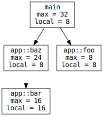
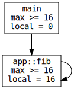
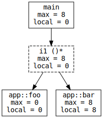
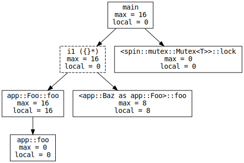
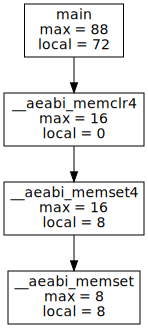
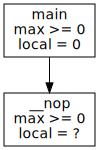
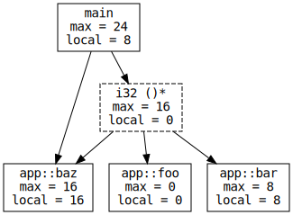
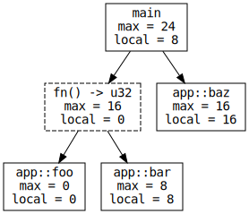
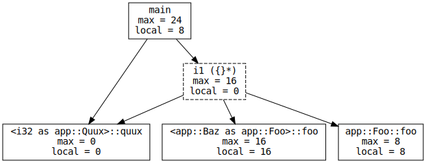
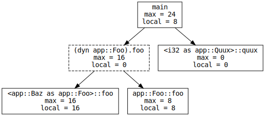

(This blog covers the implementation details of cargo-call-stack v0.1.2. If
you are only interested in using the tool these tweets and the README
will give you an idea of what it can do.)
Motivation
So, why would you ever want to analyze the stack usage of your program at compile time?
The obvious answer is when you want to know if your application can stack overflow at runtime without actually running your program. This is important for embedded applications where stack overflows can corrupt memory, and it’s actually a hard requirement for certifying the functional safety of embedded applications.
Of course, there are several stack usage analysis tools out there
but they only target C/C++, are closed source and/or cost $$$$$. So here at
LTU we set out to build a stack usage analysis tool for Rust:
cargo-call-stack. Of course we don’t claim that you can use our tool to
certify your Rust applications, at least not yet ;-).
How does it work?
Stack usage analysis consists of three steps: first, computing the stack usage of every function (subroutine) in the program, then computing the full call graph of the program and finally using these two pieces of information to compute the worst-case stack usage.
.stack_sizes
For the first step we use -Z emit-stack-sizes. This experimental flag
enables an LLVM feature that creates a linker section named .stack_sizes; this
section contains the stack usage of every function in the program.
Consider this program:
// template: https://github.com/rust-embedded/cortex-m-quickstart
// rustc: nightly-2019-03-01 (~1.33.0)
#![feature(asm)]
#![no_std]
#![no_main]
extern crate panic_halt; // panic-halt = "=0.2.0"
use cortex_m_rt::entry; // cortex-m-rt = "=0.6.7"
#[entry]
fn main() -> ! {
foo();
bar();
loop {}
}
#[inline(never)]
fn foo() {
// spill variables onto the stack
unsafe { asm!("" : : "r"(0) "r"(1) "r"(2) "r"(3) "r"(4) "r"(5)) }
}
#[inline(never)]
fn bar() {
// spill even more variables onto the stack
unsafe { asm!("" : : "r"(0) "r"(1) "r"(2) "r"(3) "r"(4) "r"(5) "r"(6) "r"(7)) }
}
If we build this example with -Z emit-stack-sizes we’ll get the .stack_sizes
section.
$ cargo rustc --bin app --release -- -Z emit-stack-sizes
$ size -Ax target/thumbv7m-none-eabi/release/app | head -n8
target/thumbv7m-none-eabi/release/app :
section size addr
.vector_table 0x400 0x0
.text 0x292 0x400
.rodata 0x0 0x694
.data 0x0 0x20000000
.bss 0x0 0x20000000
.stack_sizes 0x23 0x0
We can use the cargo-stack-sizes tool to parse the .stack_sizes section
and print it in human readable format.
$ cargo stack-sizes --bin app --release
address stack name
0x00000414 16 app::bar::ha68263a6ecabd8f4
0x00000400 8 app::foo::h447512bba9d1cb41
0x0000042c 0 main
0x00000436 0 Reset
0x00000686 0 DefaultHandler_
0x00000688 0 DefaultPreInit
0x00000690 0 HardFault_
The number reported here is the stack usage in isolation; it doesn’t consider the call graph of the program.
Call graph
To build the call graph we parse the LLVM-IR of the program, which we get from
the --emit=llvm-ir rustc flag. This flag produces a .ll file that contains
the LLVM-IR of the crate.
If you are not familiar with LLVM-IR this is what it looks like:
NOTE: I have cleaned up all the LLVM-IR snippets shown in this post by removing uninteresting bits like attributes and metadata with the goal of making them short enough to fit the screen.
; app::baz
; Function Attrs: noinline nounwind
define internal fastcc i32 @_ZN3app3baz17h677ca7ea9c7e9167E() unnamed_addr #0 {
start:
; call app::bar
tail call fastcc void @_ZN3app3bar17h2e93e4e5ba96c2a6E()
%0 = load volatile i32, i32* bitcast (<{ [4 x i8] }>* @0 to i32*), align 4
ret i32 %0
}
This is a function definition. The signature of this function is i32 () in
LLVM type system. This function calls a function named app::bar (its mangled
name, @_ZN3app3bar17h2e93e4e5ba96c2a6E, appears in the IR), which has
signature void ().
The LLVM-IR shown above corresponds to this function:
#[inline(never)]
fn baz() -> i32 {
bar();
unsafe { core::ptr::read_volatile(&0) }
}
By reading all the function definitions in the IR we can build an accurate call graph of the program as long as it only contains direct function calls like the one shown above. (Later we’ll see how to deal with function pointers and trait objects)
Once you have the stack usage of all functions and the call graph computing the worst-case stack usage boils down to walking the graph and adding up the individual stack usage numbers.
Consider this modification of the first example.
#[entry]
fn main() -> ! {
foo();
// bar(); // CHANGED!
// NEW!
// NOTE we use a volatile load here to prevent LLVM from
// optimizing away the return value
unsafe {
core::ptr::read_volatile(&baz());
}
loop {}
}
#[inline(never)]
fn foo() {
// spill variables onto the stack
unsafe { asm!("" : : "r"(0) "r"(1) "r"(2) "r"(3) "r"(4) "r"(5)) }
}
#[inline(never)]
fn bar() {
unsafe { asm!("" : : "r"(0) "r"(1) "r"(2) "r"(3) "r"(4) "r"(5) "r"(6) "r"(7)) }
}
#[inline(never)]
fn baz() -> i32 {
bar();
unsafe { core::ptr::read_volatile(&0) }
}
Let’s see what cargo-call-stack produces
$ # here we choose `main` as the start point of the call graph
$ cargo call-stack --bin app main > cg.dot
$ dot -Tsvg cg.dot > cg.svg

The nodes in this graph are functions and the edges indicate which functions a
function may call. The local number is the stack usage of the function that
we got from the .stack_sizes section. The max number is the worst-case stack
usage of a function; this number includes the stack space used by functions
called by the function.
In this case, main’s worst-case stack usage is 32 bytes and occurs when main
calls baz and then baz calls bar, so the worst-case call stack is: main,
baz, bar.
Why LLVM-IR?
At this point you may be wondering why we are using LLVM-IR to build the call graph and not something more Rust-y like MIR.
The main reason is that LLVM-IR is very close in structure to the final binary
and that’s because the .ll file produced by rustc contains the IR after
optimizations have been applied.
If we had built the call graph using MIR it would have contained way more nodes than there actually are in the binary. The extra MIR nodes wouldn’t exist in the final binary because LLVM inlined the functions or optimized them away. More work would had been required to remove these extra nodes.
Another advantage of using LLVM-IR is that is a relatively stable format, unlike MIR, so moving to a newer Rust compiler is less likely to break the tool.
Cycles
Finding the worst-case stack usage of an acyclic call graph is straightforward: you walk the graph node by node in reverse topological order. Things get a bit trickier when you have cycles in the graph. Cycles appear when the program uses recursion. Fibonacci is probably the most known example of recursion so let’s use it as an example.
static X: AtomicUsize = AtomicUsize::new(0);
#[entry]
fn main() -> ! {
X.store(fib(X.load(Ordering::Relaxed)), Ordering::Relaxed);
loop {}
}
#[inline(never)]
fn fib(n: usize) -> usize {
if n < 2 {
1
} else {
fib(n - 1) + fib(n - 2)
}
}
// could change the value of `X` at any time
#[exception]
fn SysTick() {
X.fetch_add(1, Ordering::Relaxed);
}
The above program produces the following call graph:

The fib function itself uses some stack: 16 bytes. However, because it
recursively calls itself we can’t place an upper bound on its stack usage – we
don’t how deep the recursion will go. Thus we can only say that calling fib
will use at least 16 bytes of stack; that’s why we report >= 16 as the
worst-case stack usage. Since main calls this single-node cycle it inherits
its unbounded worst-case stack usage.
If you encounter unbounded stack usage due to recursion you should consider
removing the recursion to make the program analyzable. For example, fib can
be rewritten to use a loop instead of recursion.
#[inline(never)]
fn fib(n: usize) -> usize {
let (mut a, mut b) = (1, 1);
for _ in 0..n {
b = core::mem::replace(&mut a, b) + b;
}
a
}
But, does this mean that recursion always implies unbounded stack usage? No. In some (rare?) cases, the stack usage of cycles can be bounded. Here’s one such example:
#[entry]
fn main() -> ! {
foo();
quux();
loop {}
}
// these three functions form a cycle that breaks when `SysTick` runs
#[inline(never)]
fn foo() {
if X.load(Ordering::Relaxed) {
bar()
}
}
#[inline(never)]
fn bar() {
if X.load(Ordering::Relaxed) {
baz()
}
}
#[inline(never)]
fn baz() {
if X.load(Ordering::Relaxed) {
foo()
}
}
#[inline(never)]
fn quux() {
// spill variables onto the stack
unsafe { asm!("" : : "r"(0) "r"(1) "r"(2) "r"(3) "r"(4) "r"(5)) }
}
#[exception]
fn SysTick() {
X.store(false, Ordering::Relaxed);
}
This program produces the call graph shown at the beginning of this post.
Here foo, bar and baz form a cycle but none of them uses the stack so the
worst-case (max) stack usage of the whole cycle is 0 bytes. To compute the
worst-case stack usage of main we walk the graph as we usually do but consider
each cycle as a single node, or in more technical terms: we walk over the SCCs
(Strongly Connected Components) of the graph in reverse topological order.
If you are a bit incredulous about this result (I was too!) check out the
cargo-call-stack
README. It
contains this exact same example but expands on it further by showing the
disassembly and the GDB logs of running the example on a Cortex-M3
microcontroller. (Yes, the stack usage is indeed zero!)
Function pointers
We have only seen direct function calls so far; how do we deal with function pointer calls? Turns out that the LLVM-IR representation of function pointers calls include the signature of the function and that helps.
Consider this program:
#[no_mangle] // shorter name in the llvm-ir
static F: AtomicPtr<fn() -> bool> = AtomicPtr::new(foo as *mut _);
#[entry]
#[inline(never)]
fn main() -> ! {
if let Some(f) = unsafe { F.load(Ordering::Relaxed).as_ref() } {
// call via function pointer
f();
}
loop {}
}
// ..
Which produces the following LLVM-IR:
; Function Attrs: noreturn nounwind
define void @main() unnamed_addr #2 {
start:
%0 = load atomic i32, i32* bitcast (<{ i8*, [0 x i8] }>* @F to i32*) monotonic
%1 = icmp eq i32 %0, 0
br i1 %1, label %bb6.preheader, label %bb3
bb3: ; preds = %start
%2 = inttoptr i32 %0 to i1 ()**
%3 = load i1 ()*, i1 ()** %2, align 4, !nonnull !46
; ↓
%4 = tail call zeroext i1 %3() #7
br label %bb6.preheader
bb6.preheader: ; preds = %start, %bb3
br label %bb6
bb6: ; preds = %bb6.preheader, %bb6
br label %bb6
}
The function pointer call appears in line %4 = on the right hand side. Value
%3 is the function pointer. This line also includes the signature of the
function: i1 (), which is the LLVM version of Rust’s fn() -> bool. We can
distinguish a function pointer call from a direct function call because the
latter uses the name of a function (@foo) as the callee whereas the former
uses a value (%3 in this case).
So from the IR we know that main calls a function pointer with type fn() ->
bool. If the crate and its dependency graph are written in pure Rust then we
know the signatures of all the functions in the final binary. With that
information we can (pessimistically) assume that main could call any
function with signature fn() -> bool.
So if we had these other functions in our example:
fn foo() -> bool {
false
}
fn bar() -> bool {
// spill variables onto the stack
unsafe { asm!("" : : "r"(0) "r"(1) "r"(2) "r"(3) "r"(4) "r"(5)) }
true
}
// this handler can change the function pointer at any time
#[exception]
fn SysTick() {
F.store(bar as *mut _, Ordering::Relaxed);
}
The call graph reported by the tool would look like this:

Here i1 ()* is a fictitious node that denotes a function pointer call. The
outgoing neighbors of this node are the functions that could be invoked as a
result of this call.
Trait objects
We can use a similar approach to reason about dynamic dispatch. Calling a trait
object method shows in LLVM-IR as calling a function pointer but with the
peculiarity that the signature of the function, for example, looks like this:
i1 ({}*) where LLVM’s {}* type is basically Rust’s *mut () type.
Consider the following code:
use spin::Mutex; // spin = "=0.5.0"
#[no_mangle] // shorter name in the llvm-ir
static TO: Mutex<&'static (dyn Foo + Sync)> = Mutex::new(&Bar);
#[entry]
fn main() -> ! {
// trait object dispatch
(*TO.lock()).foo();
loop {}
}
trait Foo {
// default implementation of this method
fn foo(&mut self) -> bool {
foo(&mut 0)
}
}
// ..
Which produces the following LLVM-IR:
; Function Attrs: minsize noreturn nounwind optsize
define void @main() unnamed_addr #4 {
start:
; call <spin::mutex::Mutex<T>>::lock
tail call fastcc void @"_ZN36_$LT$spin..mutex..Mutex$LT$T$GT$$GT$4lock17h2602c9565791e858E"()
%0 = load {}*, {}** bitcast (i8** getelementptr inbounds (<{ [4 x i8], i8*, i8*, [0 x i8] }>, <{ [4 x i8], i8*, i8*, [0 x i8] }>* @TO, i32 0, i32 1) to {}**), align 4, !nonnull !23
%1 = load i1 ({}*)**, i1 ({}*)*** bitcast (i8** getelementptr inbounds (<{ [4 x i8], i8*, i8*, [0 x i8] }>, <{ [4 x i8], i8*, i8*, [0 x i8] }>* @TO, i32 0, i32 2) to i1 ({}*)***), align 4, !nonnull !23
%2 = getelementptr inbounds i1 ({}*)*, i1 ({}*)** %1, i32 3
%3 = load i1 ({}*)*, i1 ({}*)** %2, align 4, !invariant.load !23, !nonnull !23
; ↓
%4 = tail call zeroext i1 %3({}* nonnull align 1 %0) #9
store atomic i8 0, i8* getelementptr inbounds (<{ [4 x i8], i8*, i8*, [0 x i8] }>, <{ [4 x i8], i8*, i8*, [0 x i8] }>* @TO, i32 0, i32 0, i32 0) release, align 4
br label %bb5
bb5: ; preds = %bb5, %start
br label %bb5
}
Line %4 = is the dynamic dispatch. Trait method Foo::foo has signature
fn(&self) -> bool; that’s why the signature of the function shows as i1
({}*) in the LLVM-IR. The type of self has been erased so we only know
that the first argument (the receiver) is a pointer.
Which functions could be dispatched by this call? In principle, any with
signature i1 (???*) where ??? could be any type: i1 (bool), i32,
%crate::module::Struct, etc., but this approach would also include inherent
methods and functions whose first argument is a pointer in the list of
candidates. For example the following function would also be considered a
candidate:
#[inline(never)]
fn foo(x: &mut i32) -> bool {
// memory clobber to trick LLVM into believing that `x` may be modified
unsafe { asm!("" : : : "memory") }
*x > 0
}
We can narrow down the list of candidates a bit further by looking at the name
of the function. Methods in trait implementations are named using the format:
<crate::module::Trait for crate::module::Type>::method, whereas default trait
methods are named using the format: crate::module::Trait::method. The
app::foo function shown above doesn’t match either format.
Now let’s see what cargo-call-stack produces when it uses both signature
matching and name matching. This is the rest of the program:
struct Bar;
// uses the default method implementation
impl Foo for Bar {}
struct Baz;
impl Foo for Baz {
// overrides the default method
fn foo(&self) -> bool {
// spill variables onto the stack
unsafe { asm!("" : : "r"(0) "r"(1) "r"(2) "r"(3) "r"(4) "r"(5)) }
true
}
}
// could change the trait object at any time
#[exception]
fn SysTick() {
*TO.lock() = &Baz;
}

Here i1 ({}*) is a fictitious node that denotes the dynamic dispatch of a
trait method with signature fn(&[mut] self) -> bool. This operation could
result in either Bar.foo or Baz.foo being called. Note that Bar.foo
appears as app::Foo::foo in the graph because Bar uses the default
implementation of this method.
Importantly, there’s no edge between i1 ({}*) and app::foo even though
app::foo matches the signature of the trait method.
For completeness sake here’s the LLVM-IR of all the functions that match the
LLVM type i1 ({}*).
NOTE: Here I have omitted the mangled names since they are long, not really useful and the demangled version already appears in the comments.
; <app::Baz as app::Foo>::foo
; Function Attrs: minsize nounwind optsize
define zeroext i1 @_(%Baz* noalias nonnull align 1) unnamed_addr #2 {
; ..
}
; app::Foo::foo
; Function Attrs: minsize nounwind optsize
define zeroext i1 @_(%Bar* noalias nonnull align 1) unnamed_addr #2 {
; ..
}
; app::foo
; Function Attrs: minsize noinline nounwind optsize
define fastcc zeroext i1 @_(i32* align 4 dereferenceable(4)) unnamed_addr #3 {
; ..
}
Checking correctness
Now that you know how cargo-call-stack works it’s a good time to check if it’s
correct by using it on a non-contrived example. The example I’ll use in this
section is a CoAP / 6LoWPAN server.
This server exposes an LED resource at path /led; this LED can be
controlled and polled using PUT and GET requests. The payloads of PUT requests
and Content responses are in JSON format. This application does not use
interrupts; all the logic is in an infinite loop (AKA a “super loop”).
For starters, here’s the call graph produced by cargo-call-stack. (Clicking
the image should open the SVG in your browser)
The tool reports that the worst-case stack usage of main is 1152 bytes. To
check whether this number is correct or not we’ll measure the stack usage by
running the program for a bit. To measure the stack usage in a non-invasive way
we’ll fill the RAM with some known bit pattern. This can be done in the linker
script.
SECTIONS
{
/* .. */
/* add this after the last section placed in RAM */
.fill : ALIGN(4)
{
FILL(0xfeedc0de);
. = ORIGIN(RAM) + LENGTH(RAM) - 4;
LONG(0xfeedc0de);
} > RAM AT > RAM
/* .. */
}
This will tell the linker to create an output section named .fill that
contains the bit pattern 0xfeedc0de repeated all over the place. This section
will span the part of the RAM that’s not used for static variables, which is
where the (call) stack resides.
As this section is marked as loadable (which is the default; NOLOAD can be
used to opt out) the debugger will load it into memory ..
$ cargo run --example sixlowpan --release
(..)
Loading section .fill, size 0x4ffc lma 0x20000004
Loading section .vector_table, size 0x130 lma 0x8000000
Loading section .text, size 0x4c18 lma 0x8000130
Loading section .rodata, size 0x520 lma 0x8004d50
(..)
(gdb) _
.. effectively initializing all unused RAM to the specified bit pattern.
Examining the memory in GDB confirms that the bit pattern is everywhere. I’m
running this program on a device with 20 KiBi (0x5000) of RAM, which is
located at address 0x2000_0000.
(gdb) x/16x 0x20004000
0x20004040: 0xdec0edfe 0xdec0edfe 0xdec0edfe 0xdec0edfe
0x20004050: 0xdec0edfe 0xdec0edfe 0xdec0edfe 0xdec0edfe
0x20004060: 0xdec0edfe 0xdec0edfe 0xdec0edfe 0xdec0edfe
0x20004070: 0xdec0edfe 0xdec0edfe 0xdec0edfe 0xdec0edfe
(gdb) x/16x 0x20004fc0
0x20004fc0: 0xdec0edfe 0xdec0edfe 0xdec0edfe 0xdec0edfe
0x20004fd0: 0xdec0edfe 0xdec0edfe 0xdec0edfe 0xdec0edfe
0x20004fe0: 0xdec0edfe 0xdec0edfe 0xdec0edfe 0xdec0edfe
0x20004ff0: 0xdec0edfe 0xdec0edfe 0xdec0edfe 0xfeedc0de
(And yes the pattern appears inverted because the target is little endian.)
What I did next was run the application and use it as I normally would. I sent a few requests and pinged the device to try to hit as many code paths as possible.
$ coap -I lowpan0 GET 'coap://[fe80::2219:220:23:5959]/led'
-> {type: Confirmable, code: Method::Get, message_id: 4324, options: {UriPath: "led"}}
<- {type: Acknowledgement, code: Response::Content, message_id: 4324}
{"led":true}
$ coap -I lowpan0 PUT 'coap://[fe80::2219:220:23:5959]/led' '{"led":false}'
-> {type: Confirmable, code: Method::Put, message_id: 4378, options: {UriPath: "led"}}
<- {type: Acknowledgement, code: Response::Changed, message_id: 4378}
$ coap -I lowpan0 GET 'coap://[fe80::2219:220:23:5959]/led'
-> {type: Confirmable, code: Method::Get, message_id: 1654, options: {UriPath: "led"}}
<- {type: Acknowledgement, code: Response::Content, message_id: 1654}
{"led":false}
$ ping -6 -c2 fe80::2219:220:23:5959%lowpan0
PING fe80::2219:220:23:5959%lowpan0(fe80::2219:220:23:5959%lowpan0) 56 data bytes
64 bytes from fe80::2219:220:23:5959%lowpan0: icmp_seq=1 ttl=64 time=15.0 ms
64 bytes from fe80::2219:220:23:5959%lowpan0: icmp_seq=2 ttl=64 time=16.2 ms
--- fe80::2219:220:23:5959%lowpan0 ping statistics ---
2 packets transmitted, 2 received, 0% packet loss, time 2ms
rtt min/avg/max/mdev = 15.002/15.612/16.222/0.610 ms
After interacting with the server for a bit I paused the program and proceeded
to inspect the RAM in GDB. Eventually I found the high-water mark of the stack
at address 0x20004dc0.
(gdb) x/16x 0x20004db0
0x20004db0: 0xdec0edfe 0xdec0edfe 0xdec0edfe 0xdec0edfe
0x20004dc0: 0xdec0edfe 0xdec0edfe 0xdec0edfe 0xdec0edfe
0x20004dd0: 0x00000001 0x00000000 0x00000000 0x00000000
0x20004de0: 0x3aaa0001 0x00000000 0x00000000 0x00000000
At its deepest the stack spanned from 0x20005000 to 0x20004dd0 (the stack
grows downwards); that’s 560 bytes, which is a much smaller value than the 1152
bytes reported by the tool as the worst-case stack usage. That’s reassuring; it
would have been bad if the measured stack usage had been greater than the
worst-case stack usage reported by the tool.
Known limitations
So far I have only shown you examples where cargo-call-stack does a good job
at building the call graph; however, the tool is far from perfect. In this
second part of the post we’ll see where the tool falls short.
LLVM intrinsics
I said that the call @_ instruction in LLVM-IR corresponds to a direct
function call. That’s not always the case because LLVM intrinsics are also
invoked using the call instruction. One good example is the llvm.memset
intrinsic; consider the following code:
#[entry]
fn main() -> ! {
let x = [0u8; 32];
// force `x` to be allocated on the stack
unsafe {
core::ptr::read_volatile(&x.as_ptr());
}
loop {}
}
It produces the following LLVM-IR:
; Function Attrs: noinline noreturn nounwind
define void @main() unnamed_addr #0 {
start:
%_7 = alloca i8*, align 4
%x = alloca [32 x i8], align 1
%0 = getelementptr inbounds [32 x i8], [32 x i8]* %x, i32 0, i32 0
; ↓
call void @llvm.memset.p0i8.i32(i8* nonnull align 1 %0, i8 0, i32 32, i1 false)
%_7.0.sroa_cast2 = bitcast i8** %_7 to i8*
store i8* %0, i8** %_7, align 4
%_7.0._7.0. = load volatile i8*, i8** %_7, align 4
br label %bb3
bb3: ; preds = %bb3, %start
br label %bb3
}
Although you get a call instruction there the actual disassembly contains no
function call:
00000400 <main>:
400: b089 sub sp, #36 ; 0x24
402: 2000 movs r0, #0
404: e9cd 0006 strd r0, r0, [sp, #24]
408: e9cd 0004 strd r0, r0, [sp, #16]
40c: e9cd 0002 strd r0, r0, [sp, #8]
410: e9cd 0000 strd r0, r0, [sp]
414: 4668 mov r0, sp
416: 9008 str r0, [sp, #32]
418: 9808 ldr r0, [sp, #32]
41a: e7fe b.n 41a <main+0x1a>
Turns out the stack-allocated array was initialized inline using a few register operations and no loops!
But this is not always the case; the output machine code depends on the size of
the array and register availability. For example, if we increase the size of the
array to 64 we get a call to __aeabi_memclr4.
00000400 <main>:
400: b092 sub sp, #72 ; 0x48
402: ac01 add r4, sp, #4
404: 2140 movs r1, #64 ; 0x40
406: 4620 mov r0, r4
408: f000 f998 bl 73c <__aeabi_memclr4>
40c: 9411 str r4, [sp, #68] ; 0x44
40e: 9811 ldr r0, [sp, #68] ; 0x44
410: e7fe b.n 410 <main+0x10>
Though we see almost no change in the LLVM-IR.
define void @main() unnamed_addr #0 {
start:
%_7 = alloca i8*, align 4
; <changed>
%x = alloca [64 x i8], align 1
%0 = getelementptr inbounds [64 x i8], [64 x i8]* %x, i32 0, i32 0
call void @llvm.memset.p0i8.i32(i8* nonnull align 1 %0, i8 0, i32 64, i1 false)
; </changed>
%_7.0.sroa_cast2 = bitcast i8** %_7 to i8*
store i8* %0, i8** %_7, align 4
%_7.0._7.0. = load volatile i8*, i8** %_7, align 4
br label %bb3
bb3: ; preds = %bb3, %start
br label %bb3
}
We may not always get a call to __aeabi_memclr4; we could get a call to
__aeabi_memclr depending on the alignment of the array. So for call
@llvm.memset(%0, 0, ..) we could get either a call to __aeabi_memclr, a call
to __aeabi_memclr4 or no function call, at least when compiling for ARMv7-M.
And this is just one LLVM intrinsic! There are at least a dozen of intrinsics
that behave like this and whose behaviors are architecture specific.
ELF to the rescue
How do we deal with these problematic LLVM intrinsics? We could port the
relevant LLVM code to cargo-call-stack but that would be a lot of work and
likely to get outdated in an LLVM update. The alternative is to ignore all calls
to LLVM intrinsics in the IR and instead directly look for function calls in the
output binary: the ELF file. As of v0.1.2 cargo-call-stack does the latter but
only for ARM Cortex-M binaries.
The idea is simple: we walk through all the subroutines (functions) in the
output ELF, take note of all branch instructions (e.g. B and BL) and use
that information to add more edges to the call graph. BL (branch link)
instructions always result in an edge; B (branch) instructions only result in
an edge if they lead to a different subroutine (B instructions are also used
to implement if conditionals and for loops within a subroutine). We ignore
all BLX (branch link exchange) instructions; these correspond to function
pointer calls and dynamic dispatch but provide no more information than what’s
contained in the LLVM-IR.
Here’s the call graph of the ARM Cortex-M program that zeroes a 64-byte array.

When dealing with non-Cortex-M binaries the tool doesn’t parse the machine code.
However, it still tries to convert calls to llvm intrinsics into edges. For
example, when dealing with ARM binaries the tool assumes that call
@llvm.memcpy can lower to either __aeabi_memcpy or __aeabi_memcpy4 so it
inserts two edges. The tool has hard-coded rules to deal with some intrinsics,
but when it sees an intrinsic it doesn’t know about it assumes that it doesn’t
produce a function call and prints a warning about it.
Other LLVM instructions
This instruction selection problem is not exclusive to LLVM intrinsics; you can
also see it in LLVM instructions other than call. One example is the fadd
instruction, which is used to add two floating point numbers. If the compilation
target has an FPU (e.g. ARMv7E-M) then this LLVM instruction lowers to the
appropriate machine instructions; if not then the LLVM instruction lowers to a
call to __aeabi_fadd, at least when compiling for ARM. There are dozens of
LLVM instructions that behave like this.
For ARM Cortex-M binaries these LLVM instructions are not a problem because we parse the machine code but for other binaries the call graph will likely be missing edges. Unlike how intrinsics are handled, the tool doesn’t try to reason about these LLVM instructions as that would be a lot of work and parsing the machine code solves the problem much more efficiently.
Here’s an example that showcases one of these problematic LLVM instructions:
#[no_mangle] // shorter name in the llvm-ir
static X: AtomicU32 = AtomicU32::new(0);
#[entry]
fn main() -> ! {
let x = X.load(Ordering::Relaxed);
let y = f32::from_bits(x) * 1.1;
X.store(y.to_bits(), Ordering::Relaxed);
loop {}
}
// can change the value of `X` at any time
#[exception]
fn SysTick() {
X.fetch_add(1, Ordering::Relaxed);
}
Here’s the LLVM IR of main. As you can see there’s no call instruction.
; Function Attrs: norecurse noreturn nounwind
define void @main() unnamed_addr #0 {
start:
%0 = load atomic i32, i32* bitcast (<{ [4 x i8] }>* @X to i32*) monotonic, align 4
%1 = bitcast i32 %0 to float
%2 = fmul float %1, 0x3FF19999A0000000
%3 = bitcast float %2 to i32
store atomic i32 %3, i32* bitcast (<{ [4 x i8] }>* @X to i32*) monotonic, align 4
br label %bb5
bb5: ; preds = %bb5, %start
br label %bb5
}
However, there is a BL instruction in its machine code:
00000400 <main>:
400: f240 0400 movw r4, #0
404: f64c 41cd movw r1, #52429 ; 0xcccd
408: f2c2 0400 movt r4, #8192 ; 0x2000
40c: f6c3 718c movt r1, #16268 ; 0x3f8c
410: 6820 ldr r0, [r4, #0]
412: f000 f9d5 bl 7c0 <__aeabi_fmul>
416: 6020 str r0, [r4, #0]
418: e7fe b.n 418 <main+0x18>
As this is a Cortex-M program the tool will parse the machine code and produce an accurate call graph:

Binary blobs
rustc can produce LLVM-IR and .stack_sizes information for all the Rust code
it compiles from source. This includes the crates in the std facade even
though they come pre-compiled as part of the rust-std component.
There’s an exception though: the compiler-builtins crate. This crate contains
only compiler intrinsics. When LLVM can’t lower an instruction like fadd to
machine code it lowers it to a call to a compiler intrinsic like __aeabi_fadd.
Compiler intrinsics are just Rust functions that come pre-compiled in the form
of the libcompiler_builtins.rlib, which is part of the rust-std component.
Unlike the other crates in the std facade compiler-builtins’s metadata is
never loaded by rustc when compiling a crate thus no LLVM-IR or .stack_sizes
section is produced for it. Loading the metadata is not required because this
special crate is always linked in as a separate object, even when LTO is
enabled.
Thus, from the point of view of the analysis, the compiler-builtins crate is a
binary blob; the tool has no type or stack usage information about the symbols
(functions) in that crate. There are other binary blobs that a crate can depend
on: C libraries, like libc.a, and pre-compiled assembly files, these are used
in the cortex-m crates.
The problems
If you are compiling for ARM Cortex-M the tool will extract call graph information from the binary blobs – the machine code is always available – thus all direct function calls will be accounted for. The tool will not, however, attempt to analyze the indirect function calls that it finds in the machine code as there’s no type information that can be used to build a list of potential callees; you will get warnings whenever such indirect function call is found. If you are compiling for a different architecture the tool will not parse the machine code of these blobs so the graph will be missing both direct and indirect edges.
The lack of stack usage information means that it’s not possible to find the worst-case stack usage of any function that, directly or indirectly, calls into a symbol that resides in a binary blob. In this case the tool will only report a lower bound like it did when it encountered potentially unbounded cycles. Here’s an example:
use cortex_m::asm;
#[entry]
fn main() -> ! {
asm::nop();
loop {}
}
As there’s no inline assembly on stable the cortex-m crate implements its
asm API using pre-compiled assembly files; these pre-compiled assembly files
are binary blobs so all the asm API has unknown stack usage.

Sometimes there’s no type information for all the symbols that reside in
binary blobs. If the symbol is called via FFI then there will be type
information for that symbol – the type information comes from the extern
block in the Rust source code. But if that external function calls another
function then there will be no type information for the second function. Also,
there’s no type information for compiler intrinsics like __aeabi_memcpy in the
LLVM-IR – these don’t appear in extern blocks since they are not explicitly
called by the program.
If there’s at least one symbol for which the tool has no type information then
the tool must assume that any function pointer call could potentially call into
such “untyped” symbol. It does so by adding an edge between an unknown node,
labeled "?" in the graph, and every one of the fictitious function pointer
call nodes.
What can we do?
We are currently focusing our efforts on making pure Rust embedded applications fully analyzable so let’s start by addressing the problems that affect that use case.
The main problem for this use case is the compiler-builtins crate. We have no
type information about the symbols in it, but we can paper over this problem in
the tool itself. All compiler intrinsics have stable an interface / ABI so we
can hard-code this information in the tool (and we already do). Note that this
doesn’t include functions called by the compiler intrinsics; those are
implementation details and have no stable interface. So with this trick you get
most but not all the type information.
We don’t have stack usage information about the compiler intrinsics but that’s
easy to fix! One simply has to recompile the compiler-builtins crate with -Z
emit-stack-sizes. I tested this locally and it works. To make this as
convenient as possible this should be done in rust-lang/rust CI so the end-user
doesn’t need to do any extra step. In the meantime, I have hard-coded some of
this information in the tool so, for example, it knows what’s the stack usage of
__aeabi_memcpy4 when the target is thumbv7m-none-eabi.
Those two fixes should cover all use cases where the program only contains
direct function calls. To fully support programs that do function pointer calls
we would need complete type information, and I think the only solution for
that would be to include the compiler-builtins crate in the LTO process
instead of always treating it as a separate object file. That way we would have
access to the LLVM-IR of compiler-builtins.
However, I believe that to be impossible due to how LLVM works: simply put if
compiler-builtins participated in the LTO process all its IR would be removed
by the optimization passes and it wouldn’t appear in the .ll file that the
tool parses. The reason for that is that the IR contains call @llvm.memset
rather than call @__aeabi_memcpy4 so the dead code elimination pass will
remove the __aeabi_memcpy4 function; the same thing would happen with all the
other compiler intrinsics and the internal functions they call.
Now going back to the general case of Rust programs that link to C libraries: in
theory it should be possible to (re)compile all C code using clang and the
-fstack-size-section flag, which is the equivalent of rustc’s -Z
emit-stack-sizes. That would give us stack usage information about all the C
functions.
Here’s a contrived example to illustrate the idea:
void foo() {
// allocate an array on the stack
char x[8];
return;
}
void bar() {
return;
}
$ clang -target thumbv7m-none-eabi -c -fstack-size-section foo.c
$ size -Ax foo.o | head -n5
foo.o :
section size addr
.text 0x8 0x0
.ARM.exidx 0x10 0x0
.stack_sizes 0xa 0x0
$ arm-none-eabi-objdump -d foo.o | tail -n7
00000000 <foo>:
0: b082 sub sp, #8
2: b002 add sp, #8
4: 4770 bx lr
00000006 <bar>:
6: 4770 bx lr
$ # `stack-sizes` is a tool shipped with `cargo-stack-sizes`
$ stack-sizes foo.o
address stack name
0x00000000 8 foo
0x00000006 0 bar
With stack usage information and the ability to extract call graph information from machine code it should be possible to analyze all programs that link to C code and only do direct function calls.
To analyze programs that do indirect function calls we would need type information. Here a potential solution could be cross language LTO. This feature would convert the C code compiled by clang into LLVM-IR that the tool can analyze. I haven’t looked into this yet as pure Rust applications are our priority.
Lossy type conversions
To reason about function pointer calls and trait objects we use LLVM types. LLVM
types, specially its primitives, don’t quite match Rust types. For example,
there are no unsigned integers in the LLVM type system so a Rust type like
u8 gets transformed into LLVM’s i8. This mismatch can cause functions to be
labeled with the wrong signature which results in incorrect edges being added to
the graph.
Consider the following example, which is a variation of the example shown in the ‘Function pointers’ section.
// return type changed
static F: AtomicPtr<fn() -> u32> = AtomicPtr::new(foo as *mut _);
#[entry]
fn main() -> ! {
if let Some(f) = unsafe { F.load(Ordering::Relaxed).as_ref() } {
f();
}
// volatile load to preserve the return value of `baz`
unsafe {
core::ptr::read_volatile(&baz());
}
loop {}
}
fn foo() -> u32 { // return type changed
0
}
fn bar() -> u32 { // return type changed
unsafe { asm!("" : : "r"(0) "r"(1) "r"(2) "r"(3) "r"(4) "r"(5)) }
1
}
// new
#[inline(never)]
fn baz() -> i32 {
unsafe { asm!("" : : "r"(0) "r"(1) "r"(2) "r"(3) "r"(4) "r"(5) "r"(6) "r"(7)) }
F.load(Ordering::Relaxed) as usize as i32
}
#[exception]
fn SysTick() {
F.store(bar as *mut _, Ordering::Relaxed);
}
The tool produces the following call graph:

Note that the function pointer call shows as i32 ()*, i.e. fn() -> i32, even
though F has type AtomicPtr<fn() -> u32>. The reason is that both Rust types
i32 and u32 map to LLVM’s i32 type. The result is that there’s an edge
between i32 ()* and baz which shouldn’t be there!
This lossy conversion not only affects integers; it also affects newtypes. For
example, the Rust type of struct Int(i32) can be transformed into one of these
two LLVM types: i32 or %Int. As far as I have seen you will only get the
latter if you use an attribute like #[repr(align(8))] on the newtype; in most
cases you will get i32.
For completeness sake here’s the LLVM-IR of functions foo, bar and baz. It
will come in handy for the next section.
; app::foo
; Function Attrs: norecurse nounwind readnone
define i32 @_ZN3app3foo17h6b6463a4119b6a8bE() unnamed_addr #0 {
; ..
}
; app::bar
; Function Attrs: nounwind
define i32 @_ZN3app3bar17h81b67229f2291d28E() unnamed_addr #1 {
; ..
}
; app::baz
; Function Attrs: noinline nounwind
define fastcc i32 @_ZN3app3baz17hf28930053d134261E() unnamed_addr #2 {
; ..
}
Metadata
How can we deal with this problem? One potential solution is to make rustc
add Rust type information to the LLVM-IR in the form of metadata.
In all the previous LLVM-IR snippets I have been removing the metadata to keep
them short but metadata can appear next to function definitions, function calls,
function arguments, etc. and usually takes one of two forms: !scope !"string"
or !scope !0. The latter form is an alias; the definition of these aliases
usually appears at the bottom of the .ll file and has the form: !0 =
!"string".
How would metadata help? We can use metadata to tag every function definition with its Rust type and also to tag every function pointer call with its Rust type. Then the tool can use these tags to match every function pointer call to the functions that have the same Rust type.
To illustrate the idea let’s revisit the previous example assuming that we have
a custom rustc that injects metadata as described above.
The function definitions would now look like this:
; app::foo
; Function Attrs: norecurse nounwind readnone
define i32 @_ZN3app3foo17h6b6463a4119b6a8bE() unnamed_addr #0 !fn !0 {
; ^^^^^^ NEW!
; ..
}
; app::bar
; Function Attrs: nounwind
define i32 @_ZN3app3bar17h81b67229f2291d28E() unnamed_addr #1 !fn !0 {
; ^^^^^^ NEW!
; ..
}
; app::baz
; Function Attrs: noinline nounwind
define fastcc i32 @_ZN3app3baz17hf28930053d134261E() unnamed_addr #2 !fn !1 {
; ^^^^^^ NEW!
; ..
}
; ..
; at the bottom
!0 = "fn() -> u32"
!1 = "fn() -> i32"
And the function pointer call would look like this:
define void @main() unnamed_addr #3 {
; ..
%4 = tail call i32 %3() #8, !fn !0
; ^^^^^^^^ NEW!
; ..
}
With these changes the tool would be able to look at the metadata instead of the
LLVM type. In this case it would know that line %4 is calling a function with
signature fn() -> u32 and that only two functions exactly match that
signature: foo and bar. The result would be the following call graph:

What string sits behind the metadata is not really important as long as each different type gets a unique metadata ID but if we use the string version of the type we can use that instead of the LLVM type, which would be an improvement in readability!
Trait misselection
We used LLVM types to reason about dynamic dispatch so naturally the lossy conversion from Rust types to LLVM types will be an issue, but there’s another problem specific to dynamic dispatch: namely, at call site, we don’t know which trait is being called – we only know the signature of the method that’s being called.
Here’s an example that illustrates the issue. It’s a variation of the example shown in the ‘Trait objects’ section.
(I hope that by this point you have grow accustomed to all the inline assembly, volatile operations and atomics required to prevent LLVM from optimizing the program beyond our expectations!)
static TO: Mutex<&'static (dyn Foo + Sync)> = Mutex::new(&Bar);
static X: AtomicI32 = AtomicI32::new(0);
#[entry]
fn main() -> ! {
(*TO.lock()).foo();
if X.load(Ordering::Relaxed).quux() {
unsafe { asm!("NOP" : : : : "volatile") }
}
loop {}
}
trait Foo {
fn foo(&self) -> bool {
unsafe { asm!("" : : "r"(0) "r"(1) "r"(2) "r"(3) "r"(4) "r"(5)) }
false
}
}
struct Bar;
impl Foo for Bar {}
struct Baz;
impl Foo for Baz {
fn foo(&self) -> bool {
unsafe { asm!("" : : "r"(0) "r"(1) "r"(2) "r"(3) "r"(4) "r"(5) "r"(6) "r"(7)) }
true
}
}
trait Quux {
fn quux(&self) -> bool;
}
impl Quux for i32 {
#[inline(never)]
fn quux(&self) -> bool {
unsafe { core::ptr::read_volatile(self) > 0 }
}
}
#[exception]
fn SysTick() {
*TO.lock() = &Baz;
X.fetch_add(1, Ordering::Relaxed);
}
Here’s the call graph produced by cargo-call-stack:

First, let me remind you what the dynamic dispatch looks like in LLVM-IR:
; Function Attrs: noreturn nounwind
define void @main() unnamed_addr #3 {
; ..
%8 = tail call zeroext i1 %7({}* nonnull align 1 %4) #8
; ..
}
The type of the first argument ({}*) tells us this is dynamic dispatch and the
LLVM type information tells us that the method signature is i1 ({}*), or
roughly fn(&[mut] self) -> bool in Rust type system. From that info alone, we
don’t know whether this is calling Foo.foo or Quux.quux; both match the i1
({}*) signature so the tool adds edges to all implementers of these two
traits.
Here’s the LLVM-IR of all the Foo.foo and Quux.quux definitions. It will be
useful for the next section.
NOTE: I have omitted the mangled function names because they were too long.
; app::Foo::foo
; Function Attrs: nounwind
define zeroext i1 @_(%Bar* nocapture nonnull align 1) unnamed_addr #1 {
; ..
}
; <app::Baz as app::Foo>::foo
; Function Attrs: nounwind
define zeroext i1 @_(%Baz* nocapture nonnull align 1) unnamed_addr #1 {
; ..
}
; <i32 as app::Quux>::quux
; Function Attrs: noinline norecurse nounwind
define fastcc zeroext i1 @_(i32* align 4) unnamed_addr #2 {
; ..
}
More metadata
How can we do better in this case? We can use even more metadata!
The idea is simple: we add a metadata ID to every trait method implementation and every dynamic dispatch site; the IDs will be unique for each trait name, method name pair. The tool then can use these IDs to match the dynamic dispatch to the set of trait implementers.
Let’s illustrate with a re-evaluation of the previous example assuming a custom
rustc.
All the trait method implementations would get extra metadata as shown below:
; app::Foo::foo
; Function Attrs: nounwind
define zeroext i1 @_(%Bar* nocapture nonnull align 1) unnamed_addr #1 !dyn !0 {
; ^^^^^^^ NEW!
; ..
}
; <app::Baz as app::Foo>::foo
; Function Attrs: nounwind
define zeroext i1 @_(%Baz* nocapture nonnull align 1) unnamed_addr #1 !dyn !0 {
; ^^^^^^^ NEW!
; ..
}
; <i32 as app::Quux>::quux
; Function Attrs: noinline norecurse nounwind
define fastcc zeroext i1 @_(i32* align 4) unnamed_addr #2 !dyn !1 {
; ^^^^^^^ NEW!
; ..
}
; at the bottom
!0 = "(dyn app::Foo).foo"
!1 = "(dyn app::Ouux).quux"
The dynamic dispatch site would also get !dyn metadata:
; Function Attrs: noreturn nounwind
define void @main() unnamed_addr #3 {
; ..
%8 = tail call zeroext i1 %7({}* nonnull align 1 %4) #8, !dyn 0
; ^^^^^^ NEW!
; ..
}
Now the tool knows that line %8 is calling method foo on a dyn Foo trait
object and will produce the following call graph:

asm!
Inline assembly (asm!) is not accounted for in LLVM’s stack-sizes-section
analysis. I imagine that’s because asm! strings are free form and LLVM never
really parses them, beyond what’s required to do string interpolation.
Here’s a contrived example that demonstrates the problem:
#[inline(never)]
#[no_mangle]
unsafe fn foo() {
asm!(r#"
sub sp, #8
add sp, #8
"#);
}
$ cargo stack-sizes --bin app --release | head -n2
address stack name
0x00000400 0 foo
$ arm-none-eabi-objdump -Cd target/thumbv7m-none-eabi/release/app | sed -n '7,10p'
00000400 <foo>:
400: b082 sub sp, #8
402: b002 add sp, #8
404: 4770 bx lr
cargo stack-sizes reports zero stack usage for foo, but if you remember the
example C code I used in the ‘Binary blobs’ section you’ll notice
that the disassembly is the same and that clang reported 8 bytes of stack usage
for the C version. Therefore the number reported for the Rust version of foo
is wrong due to the presence of inline assembly.
It’s important to note that LLVM does account for the register allocation and
register spilling caused by asm! blocks when it computes stack usage – we
have seen this in the previous examples (remember the “spill variables onto the
stack” asm! blocks?). It just doesn’t check if the assembly instructions
modify the stack pointer; it always assumes that they don’t.
What the tool does today is assume that all asm! blocks use zero stack
space, which we believe it’s the most common scenario, and additionally prints a
warning that includes the asm! string every time it does. The application
author has to inspect these warnings and make sure that all instances of inline
assembly are indeed using zero stack space.
Alternative solutions that we could explore here:
Parse the assembly string to make sense out of it and compute its stack usage. This would be a ton of work to get 100% right, and it’s also a bit tricky because
asm!strings are not always valid assembly; they are closer to format strings so you would have to deal with strings like"mrs $0, BASEPRI".Keep a list of assembly strings known to use zero stack space. Only display warnings about assembly strings that are not in this list.
Assume zero stack usage and display warnings as we do today but add an option to let the end user provide stack usage information about assembly strings.
External assembly
I have covered inline assembly but there’s also external assembly! By “external assembly” I mean assembly files that are compiled on the fly or shipped pre-compiled with a crate and then called from Rust code via FFI.
External assembly has been covered in the ‘Binary blobs’ section but in this section I wanted to stress the fact that it’s not possible to get stack information about it from LLVM. For example:
.global foo
foo:
sub sp, 8
add sp, 8
bx lr
$ clang -target thumbv7m-none-eabi -fstack-size-section -c foo.s
clang-7: warning: argument unused during compilation: '-fstack-size-section'
$ size -Ax foo.o
foo.o :
section size addr
.text 0x6 0x0
.ARM.attributes 0x25 0x0
Total 0x2b
No stack usage information!
I see a few ways to deal with the lack of stack usage information:
We add an option to let the end-user pass extra stack usage information about these external assembly functions.
We make the tool analyze the machine code to compute the stack usage of every subroutine for which we don’t have
.stack_sizesinformation. This would be a ton of work to get 100% right.We do a much more limited form of option (2) where we only try to determine if a function uses zero stack space or not. If we can’t determine the function uses zero stack space then we consider its stack usage to be unknown. This is much simpler to implement because we only have to confirm the absence of instructions that modify the stack pointer (e.g.
push,sub sp, 8, etc.). Although limited in what it can analyze this approach would be enough to handle several uses of external assembly in the wild (cortex_m::asmfor example).
core::fmt
core::fmt uses this interesting pattern that makes its call graph hard to
compute. This is the relevant source code:
// src/libcore/fmt/mod.rs (1.33.0)
// NB. Argument is essentially an optimized partially applied formatting function,
// equivalent to `exists T.(&T, fn(&T, &mut Formatter) -> Result`.
struct Void {
_priv: (),
_oibit_remover: PhantomData<*mut dyn Fn()>,
}
/// This struct represents the generic "argument" which is taken by the Xprintf
/// family of functions. It contains a function to format the given value. At
/// compile time it is ensured that the function and the value have the correct
/// types, and then this struct is used to canonicalize arguments to one type.
pub struct ArgumentV1<'a> {
value: &'a Void,
formatter: fn(&Void, &mut Formatter) -> Result,
}
impl<'a> ArgumentV1<'a> {
pub fn new<'b, T>(x: &'b T,
f: fn(&T, &mut Formatter) -> Result) -> ArgumentV1<'b> {
unsafe {
ArgumentV1 {
formatter: mem::transmute(f),
value: mem::transmute(x)
}
}
}
pub fn from_usize(x: &usize) -> ArgumentV1 {
ArgumentV1::new(x, ArgumentV1::show_usize)
}
fn as_usize(&self) -> Option<usize> {
if self.formatter as usize == ArgumentV1::show_usize as usize {
Some(unsafe { *(self.value as *const _ as *const usize) })
} else {
None
}
}
}
Which gets used like this: (argv1.formatter)(argv1.value, fmt).
ArgumentV1 is very close to a trait object: it has a pointer to the data
(value) and a pointer to a vtable (formatter), which in this case only
contains a single method. Except that it can represent one of many similar
traits. This is easier to understand with an example:
fn main() {
println!("{} and {:?}", 1i32, 2i64);
}
This program cargo-expands into:
fn main() {
{
::std::io::_print(::std::fmt::Arguments::new_v1(
&["", " and ", "\n"],
&match (&1i32, &2i64) {
(arg0, arg1) => [
::std::fmt::ArgumentV1::new(arg0, ::std::fmt::Display::fmt),
::std::fmt::ArgumentV1::new(arg1, ::std::fmt::Debug::fmt),
],
},
));
};
}
In this case the println! macro creates two instances of ArgumentV1. The
first one is basically &dyn fmt::Display where Self == i32 and the second
one is &dyn fmt::Debug where Self == i64. This means that when main
eventually invokes (argv1.formatter)(argv1.value, fmt) it could result in
either <i32 as fmt::Display>::fmt or <i64 as fmt::Debug>::fmt
being invoked.
Of course it’s impossible to figure that out from the types: argv1.formatter
has type fn(&fmt::Void, &mut fmt::Formatter) but at runtime it holds values
that originally had types like fn(&i32, &mut fmt::Formatter) and fn(&i64,
&mut fmt::Formatter). This only works because the type of the first argument
gets erased using a transmute operation in ArgumentV1::new.
Because core::fmt is so pervasively used the tool has a special case in the
code that analyzes function pointer calls to handle fn(&fmt::Void, &mut
fmt::Formatter) -> fmt::Result. Basically, it treats the fictitious node of
that function pointer call as a dynamic dispatch node and adds edges from it to
functions that match the signature (fn(&???, &mut fmt::Formatter) ->
fmt::Result) where ??? can be any type.
Here’s an example of a minimal embedded program that uses core::fmt.
// cortex-m-semihosting = "=0.3.2"
use cortex_m_semihosting::hprintln;
#[entry]
fn main() -> ! {
hprintln!("{}", true).ok();
loop {}
}
And here’s its call graph
This type erasure pattern can’t be reasoned about in the general case, or at
least I don’t know how one would go about it with just type information. It’s
also not easy for the tool to detect (but you may be able to spot it when you
look at the call graph) so it’s best to avoid using libraries that use this
pattern (core is fine) if you want to keep your program analyzable.
What’s next?
Congratulations on reaching this point! This post ended up being way longer than I originally planned.
I hope you got some value out of it. I certainly found very useful to write
this post. I originally started writing this last week right after I released
v0.1.1 but midway I realized that cargo-call-stack still had some holes that
wouldn’t be too hard to fix so I ended up working on it some more and released
v0.1.2. Now that I’m about to publish this blog post I still see some low
hanging fruit so we’ll probably see v0.1.3 in the near future!
So what’s next for cargo-call-stack?
Fixing more bugs.
Send a PR to rust-lang/rust to build the
compiler-builtinscrate with-Z emit-stack-sizes, at least when the target is ARM Cortex-M.Implement option (3) of the possible solutions to the external assembly problem.
Write an RFC / RFE to add an experimental
rustcflag that adds Rust type and trait information to the LLVM-IR as described in this post.Real Time For the Masses (RTFM) integration / inter-operation. In this post we have focused on the stack usage of the
mainfunction, but when you have interrupts, which are common in embedded applications, you need to consider preemption to compute the overall worst-case stack usage. To properly factor in preemption you need to know the priorities of all interrupts. RTFM enforces static priorities, which is requirement for being able to statically reason about the stack usage of programs that use interrupts, and knows the priorities of all interrupts. We need some mechanism to pass RTFM information tocargo-call-stackso the latter can compute the overall worst-case stack usage.Maybe add support for parsing ARM instructions (to get more call graph info) since I’m also working with Cortex-R cores. As of version v0.1.2 the tool only parses Thumb instructions, which is what Cortex-M cores use.
Thank you patrons! ❤️
I want to wholeheartedly thank:
Iban Eguia, Geoff Cant, Harrison Chin, Brandon Edens, whitequark, James Munns, Fredrik Lundström, Kjetil Kjeka, Kor Nielsen, Alexander Payne, Dietrich Ayala, Hadrien Grasland, vitiral, Lee Smith, Florian Uekermann, Ivan Dubrov and 56 more people for supporting my work on Patreon.
Let’s discuss on reddit.
Enjoyed this post? Like my work on embedded stuff? Consider supporting my work on Patreon!
Follow me on twitter for even more embedded stuff.
The embedded Rust community gathers on the #rust-embedded IRC channel (irc.mozilla.org). Join us!

{kind=link}
{kind=link}